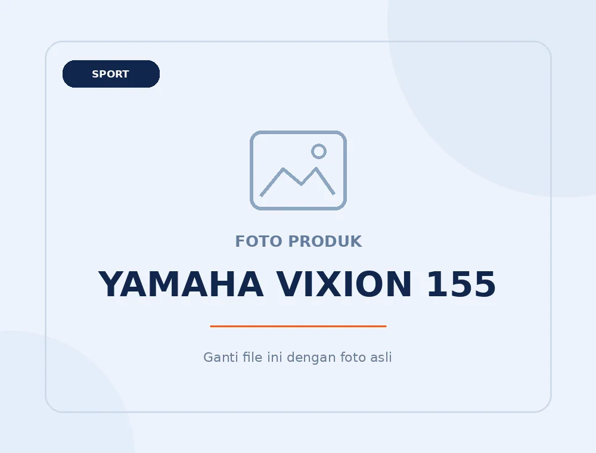

Sport1 varian
Yamaha MT-15
Harga referensi mulai · OTR JakartaRp 41.215.000Harga Bogor, DP, dan cicilan: konfirmasi melalui WhatsApp.

Lihat pilihan varian dan harga referensinya. Untuk harga pembelian di Bogor, promo, serta simulasi DP dan cicilan, konsultasikan langsung dengan RodaLinks.
Data harga per 7 Agustus 2026; bukan harga final atau penawaran OTR Bogor.
Nama model di halaman kategori: VIXION 155; varian resmi juga memuat VIXION 150.
RodaLinks membantu menghubungkan konsultasi pembelian motor dengan dealer di area Bogor. Persediaan, harga dan persetujuan pembiayaan mengikuti ketentuan pihak terkait.
Data yang tersedia di dokumen sumber meliputi kategori, nama varian, harga, warna tampilan awal, dan tautan produk. Spesifikasi mesin, dimensi, fitur, serta pilihan warna lengkap belum tersedia dalam Excel dan tidak ditambahkan secara perkiraan.
Lihat halaman model di Yamaha Indonesia untuk informasi teknis dan foto terbaru.
Tanyakan harga dan ketersediaan untuk Kota atau Kabupaten Bogor melalui WhatsApp.